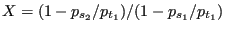

Next: Preswirl Nozzle Up: Fluid Section Types: Gases Previous: Orifice Contents
A bleed tapping device is a special kind of static orifice (Figure 87), used to divert part of the main stream flow. The geometry can be quite complicated and the discharge coefficient should be ideally determined by experiments on the actual device. The basic equations are the same as for the orifice, only the discharge coefficient is different.
The discharge coefficients provided by CalculiX are merely a rough estimate and are based on [41]. For this purpose the bleed tapping device must be described by the following constants (to be specified in that order on the line beneath the *FLUID SECTION, TYPE=BLEED TAPPING card):
Right now, two curves are coded: curve number 1 corresponds to a tapping device with lip, curve number 2 to a tapping device without lip. More specific curves can be implemented by the user, the appropriate routine to do so is cd_bleedtapping.f. Alternatively, the user can enter an own curve in the input deck listing versus . In that case the input reads